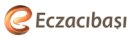
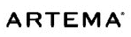
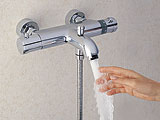
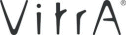
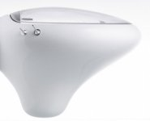
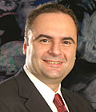
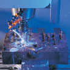

|
Son
birkaç yýldýr dünyayý sarsan Çin mallarý fýrtýnasý, hemen
her sektör gibi armatür ve banyo aksesuar firmalarýný da olumsuz
etkiledi. Türk Standartlarý Enstitüsü (TSE) ve Sanayi Bakanlýðý
ile iþbirliði yaparak kalitesiz Çin mallarýyla rekabetin önüne
geçmeyi baþaran sektör, kaliteye ve markaya yatýrým yaparak
dünya pazarlarýnda devlerle rekabet ediyor. Eczacýbaþý Topluluðu
kuruluþlarýndan Artema, armatür sektöründe 2010 yýlýnda dünyadaki
ilk on firma arasýnda olmayý hedefliyor. Artema Murahhas Üyesi
Haluk Bayraktar, 'Çin, baþlangýçta bizim için de tehdit
oluþturdu. Ancak artýk Çin'i bir tehditten çok, fýrsat olarak
görüyoruz' diyor. Bayraktar, 50'den fazla ülkeye VitrA markasýyla
armatür ve banyo aksesuarý satan Artema'nýn, 85 milyon dolar
ciroyla bugün dünyada sektöründe 20 firma arasýnda yer aldýðýný
söylüyor.
Armatür
sektöründe son birkaç yýldýr neler yaþanýyor?
-
Özellikle son üç yýlda dünyada armatür sektöründe ciddi yapýsal
deðiþiklikler oldu. Sektöre son 40-50 yýlda liderlik eden
markalara sahip þirketler yapýsal deðiþiklikler geçirdi. Çin
mallarý dünyada armatür sektörüne bir darbe vurdu. Dünyanýn
önde gelen þirketleri üretimlerinin bir bölümünü bulunduklarý
ülkelerden Uzakdoðu'ya kaydýrdý. Yine son üç yýlda armatürün
ana girdisi olan bakýr neredeyse 2.5 kat pahalandý. Bunun
sonucunda da kar marjlarý çok ciddi oranda düþtü. Bunlarýn
sonucunda çok güçlü olmayanlarýn çoðu kapandý. El deðiþtirenler,
birleþenler oldu.
Türkiye
bu deðiþimlerden nasýl etkilendi?
-
Dünyada yaþanan trend, Türkiye'de de bir miktar kendisini
gösterdi. Sektör özellikle 2003 ve 2005 arasýnda çok ciddi
bir fiyat rekabeti içine girdi. Özellikle Çin'den ithal ürünler
Türkiye pazarýna hakim hale geldi.
 Bu
deðiþim yaþanýrken Artema neler yaptý? Bu
deðiþim yaþanýrken Artema neler yaptý?
-
Artema olarak marka deðerimizi üst noktalarda tutmak için
ciddi çabalar harcadýk. Baþarýlý da olduk. Þu anda 85 milyon
dolar ciromuzla Türkiye'nin en büyük armatür markasýyýz. Dünyada
Çin'in devreye girmesiyle fiyat rekabeti öyle bir hale geldi
ki, ürünlerin birbirinden ayrýþtýrýlmasý mümkün olmuyor. Bu
yüzden son 3-4 yýldýr teknolojik üstünlüklerine ve fonksiyonelliklerine
ciddi oranda yatýrým yapýyoruz. Dünyaca ünlü tasarýmcýlarla
çalýþýyoruz.
|
Termostatik
Banyo ve Duþ Bataryalarý:
Teknoloji ve Tasarým"... Artema bu iki kavramý
bir araya getirerek kullanýcýlarýna yenilikçi ve özel
çözümler sunmaya devam ediyor.
Minimalist
tasarýmýyla göz dolduran yeni termostatik ürünler ile
suyun sýcaklýðýný istediðiniz ölçüde ayarlayabilir ve
Artema teknolojisinin suya hakimiyetini hissedebilirsiniz...
|
Dünyadaki
konumuzun nedir?
-
Dünyadaki birleþmelerin, küçülmelerin ardýndan ilk 20'nin
içindeyiz. Eczacýbaþý Topluluðu'nun bir parçasý olmamýzýn
getirdiði ayrý bir yapýsal gücümüz var. Dünyada akla gelen
ilk markalardan biri haline geldik.
Hedefiniz
ne?
-
Dünyada ilk on firma arasýna girmemiz lazým. Bu noktaya da
2010 yýlýnda gelmemiz gerektiðini düþünüyoruz.
Kaç
ülkeye, ne kadar ihracat yapýyorsunuz?
-
Toplam üretimimizin yüzde 65'ini VitrA markasýyla ihrac ediyoruz.
Geri kalanýný Artema markasýyla iç pazarda satýyoruz. 50'nin
üzerinde ülkeye ihracat yapýyoruz.
Çin'e
ihracatýnýz var mý?
-
Çin'e þu anda satýþýmýz var, ama yüksek oranlý deðil. Pazar
yatýrýmlarýmýzý yapýyoruz, fuarlara katýlýyoruz. 2006'dan
sonra Çin'de daha büyük cirolardan bahsedebileceðiz. Çin'de
Çinli üreticilerle rekabet etmek gibi bir niyetimiz yok. Ama
ithal gelen Avrupalý kaliteli ürünlerle rekabet edeceðiz.
Çin'i bu anlamda da tehdit deðil fýrsat olarak deðerlendiriyoruz.
Dünyadaki
yapýyý deðiþtiren Çin sizin için tehdit oluþturmadý mý?
-
Çin, baþlangýçta tüm sektörlerde olduðu gibi bizim için de
bir tehdit oluþturdu. Artema olarak Çin'i bir tehditten çok,
fýrsat olarak görüyoruz. Çin'den gelen ürünler Türkiye pazarýnda
çok ciddi bir sýkýntý yaratmadý. Çünkü markamýzý doðru konumlandýrmayý
baþardýk.
Yurtdýþýnda
üretim planýnýz var mý?
-
Þu anda kesinleþmiþ bir kararýmýz. Ancak üretim tesisinden
ziyade baktýðýmýz montaj tesisleri olabilir diye düþünüyoruz.
Henüz böyle bir kararýmýz yok. Þartlar uygun olursa tabii
ki deðerlendirebiliriz. Uzakdoðu ve Rusya, Dubai ve çevresi
de olabilir. Rusya ve Dubai bizim için iyi pazarlar. Dubai'de
dünyanýn en büyük konut projelerinden biri olan Jumeirah Beach
Residence'ýn armatürlerini de biz karþýlayacaðýz.
Ýç
pazarda yerli üreticiler Çin mallarýna karþý önlem aldý mý?
-
Çin mallarý 2003 ve 2004'de iç pazardan ciddi pay aldý. Ancak
2004'de yerli üreticiler olarak TSE ve Sanayi Bakanlýðý ile
birlikte özellikle standart dýþý gelen mallara karþý bir çalýþma
baþlattýk. Dünyanýn 50'den fazla ülkesine ihracat yapýyoruz.
Ýhracat yaptýðýmýz ülkelerin standartlarýna uymak zorundayýz.
Türkiye'de 2004 yýlýna kadar bu sistem açýkçasý çalýþmýyordu.
Çünkü TSE'nin ithal ürünleri test edecek donanýmý yoktu.
TSE
artýk bu donanýma sahip mi?
-
Türk üreticileri olarak TSE bünyesinde bu donanýmlarýn kurulmasý
için maddi destek verdik. Test cihazlarýný temin ettik, gereken
donanýmý kurduk. Türkiye'ye standartý olan ürünler girdiðinde
sorun yok.
Önümüzdeki
yýllarda armatürlerde neler ön plana çýkacak?
-
Yakýnda elektronik olarak duþunuzun suyunu istediðiniz sýcaklýkta
ayarlayabileceksiniz. Þu anda bunu mekanik olarak elle yapabiliyorsunuz.
Ayrýca bundan sonra su ve enerji tüketimini azaltan ürünlere
talep artacak.
Yeni
tasarýmlý ürünleriniz ne zaman satýþa sunulacak?
-
Tasarýmcý Ross Lovegrove ile bir iþbirliði anlaþmamýz
var. Onlarýn tasarýmlarýný nisan ayýndan itibaren piyasaya
sunmaya baþlayacaðýz.
Armatür
pazarýnda þu anda Artema dýþýnda kaç üretici var?
-
Türkiye armatür pazarýnda Artema'yla birlikte armatür pazarýný
paylaþan en büyük üretici Elginkan Topluluðu kuruluþlarýndan
ECA. Bunun dýþýnda yerli ve yabancý pek çok üretici bulunuyor.
Pazarýn
pazarýnýn büyüklüðü nedir?
-
2004'ün sonunda banyo ve mutfak armatürleri, duþ sistemleri
ve musluklardan oluþan armatür pazarýnýn büyüklüðü 9 milyon
adede ulaþtý. Metal banyo aksesuarlarý, ayna ve apliklerden
oluþan banyo aksesuarlarýnýn Pazar büyüklüðü ise yaklaþýk
3 milyon adet olarak gerçekleþti.
Ýhracatta
niye Artema markasýný kullanmýyorsunuz?
-
Dünyada marka olmak çok kolay deðil, çok büyük yatýrým gerekiyor.
Dünyada kendi bünyesinde vitrifiye, seramik saðlýk gereçleri,
küvet, karo seramik, banyo mobilyalarý, armatür, banyo aksesuar
üreten pazarlayabilen üreticiler içinde Eczacýbaþý Grubu ve
VitrA çok büyük bir güce sahip.
Haluk
Bayraktar Hakkýnda:
Artema
Murahhas Üyesi Haluk Bayraktar, 1969 doðumlu. 1993'te Viyana
Üniversitesi Makina Mühendisliði Bölümü'nden mezun oldu. 1995'de
yine ayný üniversitede yüksek lisans eðitimini tamamladý.
Ýþ hayatýna 1996'da Procter&Gamble kuruluþunun ABD'deki
merkezinde Ürün Sorumlusu olarak baþladý. 1997'de Eczacýbaþý
Yapý Gereçleri - Artema Armatür Grubu'na Aksesuar Sorumlusu
olarak katýldý. 1998-2004 arasýnda Eczacýbaþý Yapý Gereçleri-Artema'da
Proje Müdürlüðü yaptý. 2004'den beri Artema Murahhas Üyesi.
Ross
Lovegrove Hakkýnda:
1958
yýlýnda doðan Ross Lovegrove, Manchester Politeknik Üniversitesi'nde
endüstriyel tasarým öðrenimi gördü ve Londra Royal College
of Art'ta yüksek lisans derecesini aldý.1980'lerin baþýnda
Frog Design adlý Alman tasarým firmasý için çalýþmaya baþlayan
Lovegrove, Apple, Sony ve Knoll International için gerçekleþtirilen
çeþitli projelerde yer aldý. Fransa'da en iyi beþ tasarýmcýdan
biri seçilerek "Atelier de Nimes"i kurmak üzere
Paris'e davet edilen Lovegrove, aralarýnda Philippe Starck
ve Jean Nouvel'in de bulunduðu beþ tasarýmcýyla beraber dekorasyon
objelerinden bisküvilere kadar pek çok ürün tasarladý.Tasarýmcý
1986 yýlýnda kendi atölyesini kurarak Louis Vuitton, Hermes
ve Dupont gibi tasarýmlarýyla dünya çapýnda isim yapmýþ seçkin
firmalarla çalýþmýþtýr.
VitrA'nýn
komple banyo çözümleri sunma konusundaki becerisinin, 21.
yüzyýlýn tasarým dehalarý arasýnda gösterilen Ross Lovegrove'un
sofistike teknoloji ve malzeme kullanma yeteneðiyle birleþiminden
doðan yeni koleksiyonun dünya lansmaný Londra'da gerçekleþtirildi.
Ross Lovegrove tarafýndan tasarlanan ve "Ýstanbul"
adý verilen özel koleksiyon için 100'ü aþkýn ürün geliþtirildi.
Ýstanbul'u ziyaret ettiðinde Türk seramik ve banyo kültürüyle
yakýndan ilgilenen Lovegrove, Türkler'in etnik yapýsýndan,
mimarisinden ve adetlerinden ilham alarak yeni bir perspektif
geliþtirdi. Osmanlý geometrisini ve hat sanatýný inceleyerek
bunlarý hem grafiksel hem akýþkan olabilen, organik ve yüksek
duyarlýlýða sahip sanatlar olarak deðerlendiren Ross Lovegrove,
bu iki boyutlu uygulamalarý tasarýma dönüþtürerek baskýlý
ürünler için yüzey desenleri, desenli paneller ve bölmeler
tasarladý ve bu þekilde Ýstanbul koleksiyonu doðdu. Hassas
kalýp döküm teknolojileriyle üretilmekle birlikte Lovegrove'a
özgü organik formlarý da yansýtan seramikler, her yerde kullanýlabilme
özelliðine sahip. Ross Lovegrove'un, Ýstanbul'dan çok etkilenmesi
ve farklý kültürlerin birleþtiði bir açýk müze olarak nitelendirmesi,
yeni koleksiyonun da isim kaynaðý oldu. Türk banyo kültürünün
teknolojik ve modern yorumu olarak tanýmlanan Ýstanbul koleksiyonunun,
VitrA'nýn global marka imajýný kuvvetlendirdiði kadar, Türkiye'nin
uluslararasý imajýna da katkýda bulunmasý hedefleniyor.
Artema
Hakkýnda:
1979
yýlýnda Dr. Nejat Eczacýbaþý'nýn temelini attýðý Artema Bozüyük
üretim tesisleri 1983 yýlýnýn sonlarýna doðru sýhhi tesisat
armatürleri üretimine baþladý. 1995 yýlýnda faaliyet alanýna
banyo aksesuarlarýný da dahil eden kuruluþ bugün banyo armatürleri,
mutfak armatürleri, duþ sistemleri ve banyo aksesuarlarý olmak
üzere 4 ana ürün grubunu müþterilerinin beðenisine sunuyor.
Yýllýk
8,7 milyon adet armatür ve 2,3 milyon adet banyo aksesuarlarý
üretim kapasitesine sahip olan Artema, Ýstanbul ve Bozüyük'te
yerleþik olmak üzere yaklaþýk 500 kiþilik bir kadroyla faaliyet
gösteriyor.
Eczacýbaþý
Yapý Gereçleri-Artema, ürünlerini kendi bünyesinde ve yurtdýþýndaki
tasarýmcýlarla ortaklaþa tasarlýyor ve geliþtiriyor. Kuruluþ,
ayrýca yurtdýþý müþterileri için özel ürün tasarýmý da yapýyor.
Eczacýbaþý Yapý Gereçleri-Artema ürünleri, banyo-mutfak armatürleri,
duþ sistemleri ve banyo aksesuarlarý ile birlikte sýhhi tesisat
valflerinden oluþuyor. Açma kapama düzenine göre ele alýndýðýnda
tek kumandalý, çift kumandalý (klasik ve 90 derece), termostatik,
elektronik ve zaman ayarlý armatürler üretiyor. Armatür ve
aksesuarlar krom kaplamanýn yaný sýra krom-altýn, saten ve
deðiþik renk seçeneklerinde müþterilerin beðenisine sunuluyor.
Kuruluþ,
rekabet gücünü yüksek tutmak için sürekli olarak dünyadaki
geliþmeleri, yeni teknolojileri izleyip, bu teknolojilerden
kendisinin geliþmesine katkýda bulunacaklarý sisteme dahil
ederek teknolojisini sürekli yeniliyor. Eczacýbaþý Yapý Gereçleri-Artema'da
hýzlý ve esnek üretimi gerçekleþtirmek için tasarým aþamasýnda
CAD/CAM (Pro/ENGINEER) ve hýzlý prototipleme sistemi (Stratasys
FDM 2000) kullanýlýyor.
ISO
9001 Kalite Sistem Sertifikasý ve ISO 14001 Çevre Yönetim
Sistemi sertifikasýna sahip olan Artema'nýn ürünleri TS EN
817 ve TS EN 200 standartlarýna uygun olarak üretiliyor. Artema'nýn
kalitesi ürünlerin ihracatýnýn yapýldýðý dýþsatým pazarlarýnda
da ayrýca onaylatýlýyor. Kalite sistemlerini ön planda tutarak
gerçekleþtirdiði çalýþmalar ile Artema, sektöründe "Ulusal
Kalite Baþarý Ödülü" almaya hak kazanan ilk firma olmuþtur.
Yüksek
teknoloji ile üretilen Artema ürünleri fonksiyonelliðin yaný
sýra tasarýmda da sektör liderliðini temsil ediyor. NASA'nýn,
uzay araçlarýný dýþ etkilerden korumak amacýyla kullandýðý
PVD (physical vapor deposition) teknolojisini uygulayarak
ürünlerinde daha dayanýklý yüzeyler oluþturan Artema "Chrommax"
adýný verdiði bu teknolojiyle ömür boyu kaplama garantisi
sunuyor.
Yurt
içi pazarda sektörün önde gelen kuruluþlarýndan olan þirket,
2003 yýlýnýn sonuna gelindiðinde toplam satýþlarýnýn %65'ini
de dýþsatým pazarlarýna gerçekleþtirir duruma gelmiþtir.
5
kýtada 50'ye yakýn ülkeye ihracat gerçekleþtiren Artema'nýn
temel dýþsatým pazarlarýný Amerika, Almanya, Ýngiltere, Ýsveç,
Avustralya, BDT ve Ortadoðu ülkeleri oluþturuyor. Artema,
özellikle Amerika, Ýsveç ve Almanya'da sektörün önde gelen
kuruluþlarýyla iþbirliði yapýyor.
Gerek
yönetim anlayýþý, gerek ürün kalitesi ve müþteri odaklý hizmet
yaklaþýmý ile Artema, sadece Türkiye'de deðil dýþ pazarlarda
da hýzla büyümekte ve atýlýmlarýný sürdürmektedir.
Daha
fazla bilgi için:
|